5.4 Organic Chemistry Arenes · Topic 18
Benzene structure, stability and electrophilic substitution
5.4 Organic Chemistry Arenes · Topic 18
本页严格按 Pearson Edexcel International Advanced Level Chemistry specification 的 Topic 18: Organic Chemistry - Arenes（18.1–18.6） 编排，主要依据项目内的 5.4 Organic Chemistry Arenes.pdf.pdf。解释采用中文，专业词汇保留 English，便于和 reaction mechanisms、spectroscopic evidence 及 exam wording 对照。
Learning objectives
学完本章后，你应该能够：
- use thermochemical、X-ray diffraction 和 infrared data 作为 benzene structure / stability 的 evidence；
- explain benzene 的 delocalised \(\pi\) system、p-orbital overlap、planarity 和 equal C-C bond lengths；
- explain why benzene resists bromination compared with alkenes；
- write benzene combustion、halogenation、nitration、sulfonation 和 Friedel-Crafts reactions；
- describe electrophilic substitution mechanisms，并说明 electrophile generation；
- explain why phenol reacts with bromine water more readily than benzene。
18.1 Structure and stability of benzene
Kekule model and delocalised model
早期 Kekule model 把 benzene 画成 six-membered ring with alternating C-C single / double bonds。这种 drawing 在 equations 中仍可使用，但它不能解释 benzene 的全部 properties。
现代 model：
- each carbon is sp\(^2\) hybridised，bond angles approximately 120°；
- each carbon forms three \(\sigma\) bonds：与两个 adjacent carbons 和一个 hydrogen / substituent；
- 每个 carbon 留下一个 unhybridised p orbital；
- neighbouring p orbitals overlap sideways，形成 continuous delocalised \(\pi\) system；
- \(\pi\) electron density 位于 ring plane 上方和下方；
- molecule planar，six C-C bonds equal。
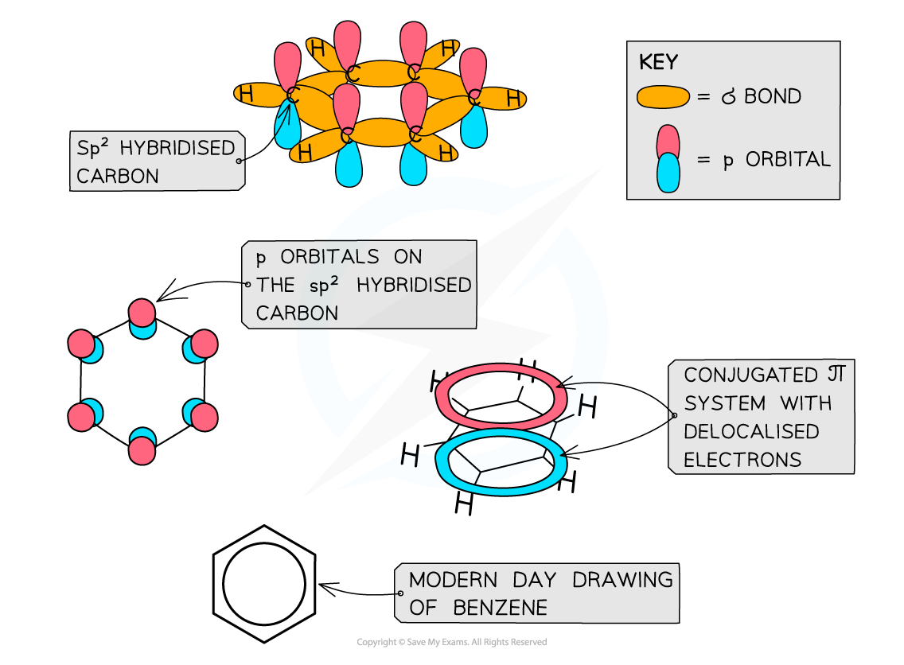
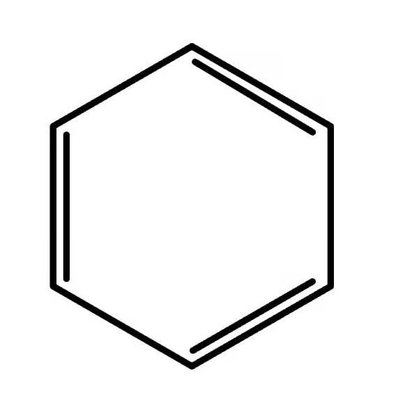
Evidence from bond lengths
如果 benzene 真的是 Kekule cyclohexa-1,3,5-triene，应有两类 C-C bond：
- C-C single bond 约 \(154\ \mathrm{pm}\)；
- C=C double bond 约 \(134\ \mathrm{pm}\)。
但 X-ray diffraction 显示 benzene 的 six C-C bonds 都约为 \(140\ \mathrm{pm}\)，介于 single 和 double bond 之间。这说明 six bonds 等价，具有 intermediate bond order，是 delocalisation 的 evidence。
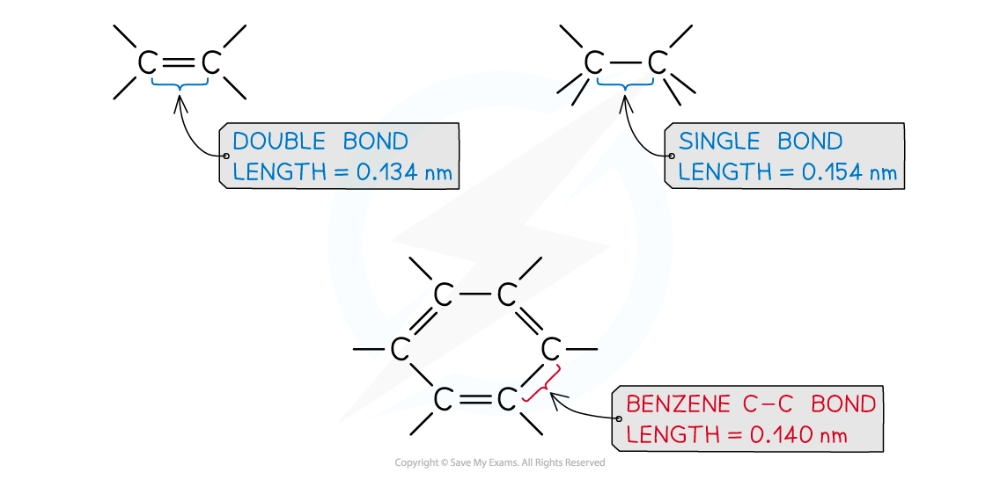
Thermochemical evidence: enthalpy of hydrogenation
Cyclohexene 只有 one C=C bond，hydrogenation enthalpy 约为：
\[ \ce{C6H10 + H2 -> C6H12}\qquad \Delta H=-120\ \mathrm{kJ\,mol^{-1}} \]
若 benzene 是有 three isolated C=C bonds 的 Kekule structure，预计：
\[ 3(-120)=-360\ \mathrm{kJ\,mol^{-1}} \]
但实际 benzene hydrogenation：
\[ \ce{C6H6 + 3H2 -> C6H12}\qquad \Delta H=-208\ \mathrm{kJ\,mol^{-1}} \]
实际 reaction less exothermic，说明 benzene 的 starting molecule 比 hypothetical Kekule structure 更 stable。约 \(152\ \mathrm{kJ\,mol^{-1}}\) 的 stability difference 可视为 delocalisation energy / aromatic stabilisation 的 evidence。
Saturation test and infrared evidence
Cyclohexene 的 localised C=C 能使 bromine water decolourise，发生 electrophilic addition。Benzene 不会在 ordinary conditions 下 decolourise bromine water，因为没有 localised double bond 可直接进行 addition。
Infrared evidence：
- alkene C=C 通常在约 \(1650\ \mathrm{cm^{-1}}\) 出现 absorption；
- benzene 不显示 typical isolated alkene peak at \(1650\ \mathrm{cm^{-1}}\)；
- benzene / arene ring 显示约 \(1450\)、\(1500\) 和 \(1580\ \mathrm{cm^{-1}}\) 的 characteristic absorptions。
因此 thermochemical、X-ray diffraction、saturation test 和 IR evidence 都支持 delocalised aromatic ring model。
18.2 Delocalised \(\pi\) bonding
Orbital picture
Benzene 的 six p orbitals overlap to form one continuous cyclic \(\pi\) system。这个 system 的 electron density spread over the whole ring，而不是集中在 three separate C=C bonds。
Delocalisation 解释：
- six C-C bonds identical；
- bond length intermediate between C-C and C=C；
- molecule planar and regular；
- benzene unusually stable；
- benzene prefers substitution，because substitution restores aromaticity，而 addition destroys it。
18.3 Resistance to bromination
Benzene vs alkene bromination
Alkene 的 localised \(\pi\) bond 是 electron-rich region，可 polarise \(\ce{Br2}\)，使 bromine molecule 产生 \(\ce{Br^{\delta+}}\) 和 \(\ce{Br^{\delta-}}\)，随后 electrophilic addition 形成 dibromo compound。
Benzene 的 \(\pi\) electrons 是 delocalised，ring 上没有某一个 localised high-electron-density C=C position，不能有效 polarise \(\ce{Br2}\)。若没有 catalyst，benzene 不会快速 brominate。
Benzene 在 halogen carrier / Lewis acid catalyst 存在下发生 electrophilic substitution：
\[ \ce{C6H6 + Br2 ->[AlBr3] C6H5Br + HBr} \]
反应过程中 ring 暂时失去 aromaticity，但最后 elimination of \(\ce{H+}\) restores the delocalised \(\pi\) system。这个 restoration 是 substitution 比 addition 更有利的关键。
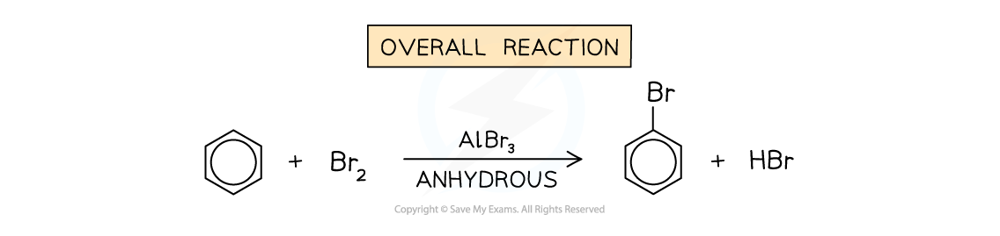
18.4 Reactions of benzene
Combustion
Combustion in air
Benzene 是 hydrocarbon，在 sufficient oxygen 中完全燃烧：
\[ \ce{2C6H6(l) + 15O2(g) -> 12CO2(g) + 6H2O(g)} \]
因为 benzene 需要 relatively large amount of oxygen，air 中燃烧可能 incomplete，留下 unreacted carbon，产生 smoky yellow flame。Benzene historically 用作 solvent 和 chemical feedstock，但它有 toxicity，实际 use 需要严格 control exposure。
Halogenation
Bromination / chlorination
Benzene 与 halogen 在 metal halide catalyst 存在下发生 substitution：
\[ \ce{C6H6 + Cl2 ->[AlCl3] C6H5Cl + HCl} \]
\[ \ce{C6H6 + Br2 ->[AlBr3] C6H5Br + HBr} \]
Catalyst 生成 electrophile 并在最后一步 regenerate：
\[ \ce{AlCl3 + Cl2 <=> AlCl4^- + Cl+} \]
Electrophile 是 \(\ce{Cl+}\) 或 \(\ce{Br+}\)；one H atom on ring 被 halogen substitute。
Nitration
Nitrobenzene formation
Benzene 与 mixture of concentrated nitric acid and concentrated sulfuric acid 反应，temperature 通常控制在 25-60 °C：
\[ \ce{C6H6 + HNO3 ->[conc. H2SO4][25-60\ ^\circ C] C6H5NO2 + H2O} \]
Product 是 nitrobenzene，\(\ce{-NO2}\) group replaces one ring hydrogen。
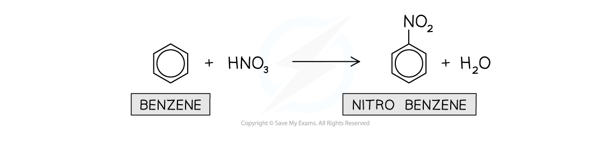
Sulfonation
Benzenesulfonic acid formation
Benzene 与 fuming sulfuric acid（\(\ce{SO3}\) dissolved in concentrated \(\ce{H2SO4}\)）在约 40 °C warm，生成 benzenesulfonic acid：
\[ \ce{C6H6 + H2SO4 ->[fuming][40\ ^\circ C] C6H5SO3H + H2O} \]
这里 \(\ce{-SO3H}\) group replaces ring hydrogen，是 electrophilic substitution。
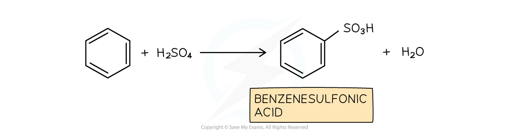
Friedel-Crafts reactions
Alkylation and acylation
Friedel-Crafts alkylation 把 alkyl group 引入 benzene ring：
\[ \ce{C6H6 + CH3CH2CH2Cl ->[AlCl3][heat] C6H5CH2CH2CH3 + HCl} \]
Friedel-Crafts acylation 把 acyl group \(\ce{-COR}\) 引入 benzene ring：
\[ \ce{C6H6 + CH3CH2COCl ->[AlCl3][heat] C6H5COCH2CH3 + HCl} \]
两者都是 electrophilic substitution，包含：electrophile generation、electrophilic attack 和 restoration of aromaticity。
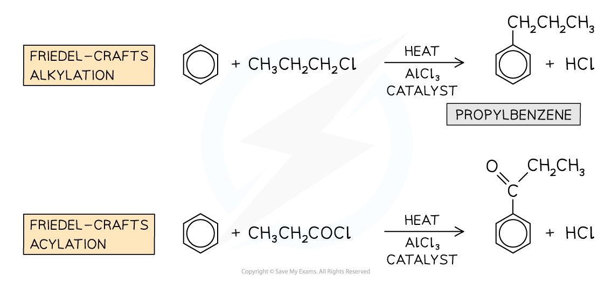
18.5 Electrophilic substitution mechanisms
General mechanism
所有 benzene electrophilic substitution mechanisms 都可按 three steps 分析：
- Generate electrophile：由 catalyst / acid 与 reagent 反应，electrophile 常在 situ 形成；
- Electrophilic attack：benzene ring 的 delocalised \(\pi\) electrons attack \(\ce{E+}\)，形成 sigma complex / arenium ion；aromaticity 暂时 lost；
- Regenerate aromaticity：base remove proton from carbon bonded to E，C-H bond electrons return to ring，恢复 delocalised \(\pi\) system。
Net reaction 是 ring H 被 E substitute，并生成 acid / catalyst regeneration product。
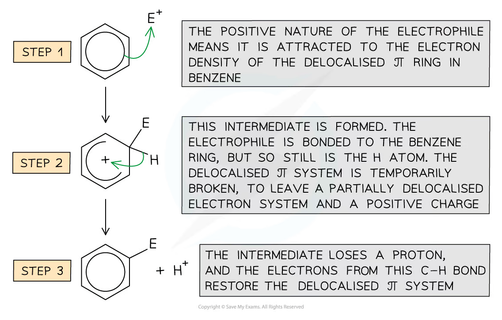
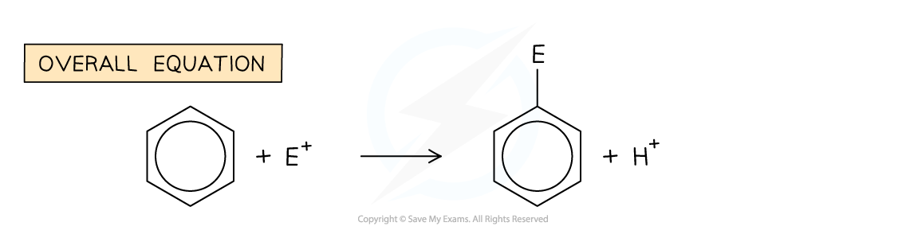
Nitration mechanism
Generation of the nitronium ion
Concentrated sulfuric acid protonates nitric acid，生成 nitronium ion \(\ce{NO2+}\)：
\[ \ce{H2SO4 + HNO3 <=> NO2+ + HSO4^- + H2O} \]
Mechanism：
- ring \(\pi\) electrons attack \(\ce{NO2+}\)；
- form arenium ion with positive charge and temporarily partial delocalisation；
- \(\ce{HSO4^-}\) removes \(\ce{H+}\)；
- C-H bond electrons restore aromaticity，\(\ce{HSO4^-}\) becomes \(\ce{H2SO4}\)。
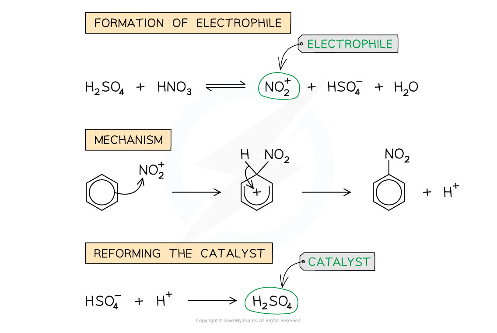
Halogenation mechanism
Electrophile generation with aluminium chloride
With chlorine：
\[ \ce{AlCl3 + Cl2 <=> AlCl4^- + Cl+} \]
The \(\ce{Cl+}\) electrophile attacks benzene；after deprotonation，aromaticity is restored and \(\ce{AlCl3}\) regenerated：
\[ \ce{AlCl4^- + H+ -> AlCl3 + HCl} \]
For bromination，the analogous carrier is \(\ce{AlBr3}\) or \(\ce{FeBr3}\)。
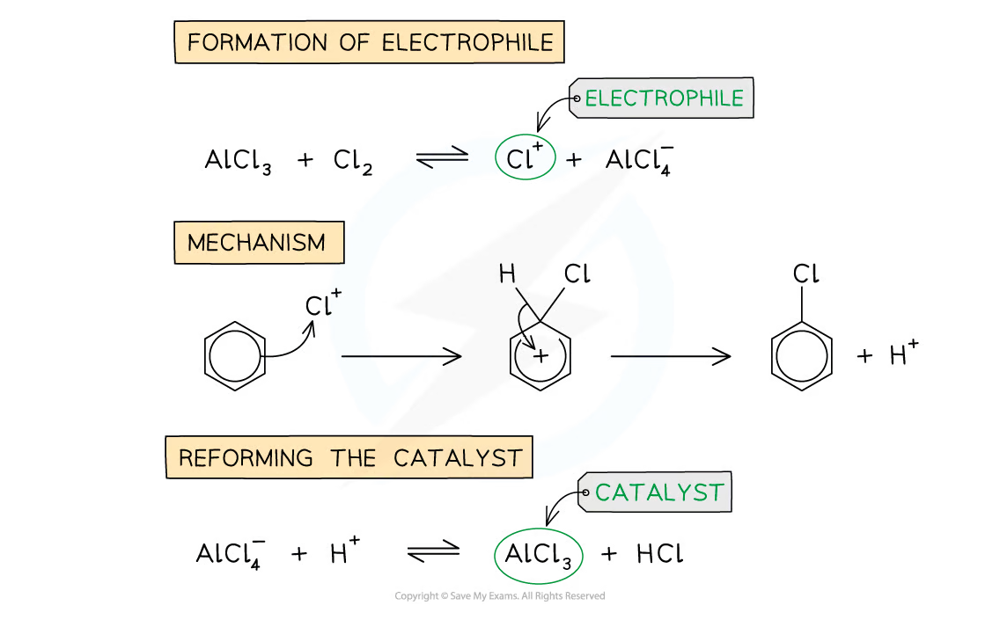
Friedel-Crafts acylation mechanism
Acyl electrophile and aromatic substitution
For propanoyl chloride：
\[ \ce{CH3CH2COCl + AlCl3 -> CH3CH2CO+ + AlCl4^-} \]
The acylium ion \(\ce{CH3CH2CO+}\) 是 electrophile。Benzene ring attack the acylium ion，形成 arenium ion；\(\ce{AlCl4^-}\) removes the proton，restore aromaticity，并生成 HCl 和 regenerate \(\ce{AlCl3}\)。
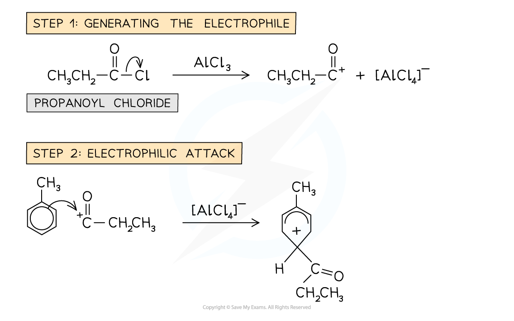
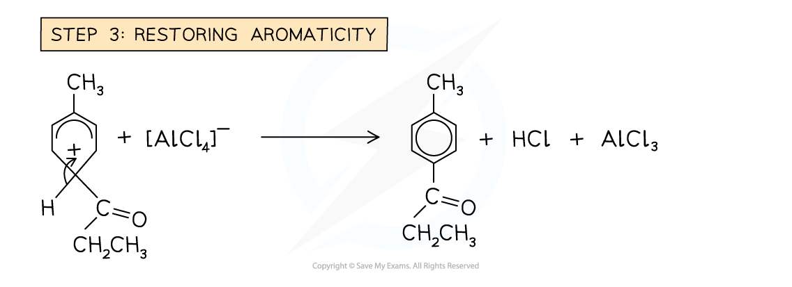
18.6 Phenol bromination
Why phenol is more reactive than benzene
Phenol 的 \(\ce{-OH}\) oxygen 有 lone pair，可以与 aromatic ring 的 \(\pi\) system overlap，通过 resonance donate electron density into ring。于是：
- ring electron density increases；
- electrophile 更容易 attack；
- \(\ce{-OH}\) 是 activating group；
- incoming electrophiles preferentially direct to 2、4、6 positions（ortho / para positions）。
所以 phenol 比 benzene 更容易进行 electrophilic substitution。
Bromine-water test
Phenol 与 bromine water 在 room temperature 下直接反应，不需要 Lewis-acid halogen carrier：
\[ \ce{C6H5OH + 3Br2(aq) -> C6H2Br3OH(s) + 3HBr(aq)} \]
Observation：orange bromine water decolourises，并生成 white precipitate of 2,4,6-tribromophenol。
对比 benzene：benzene 需要 \(\ce{AlBr3}\) / \(\ce{FeBr3}\) 才能 brominate，且产物是 monobrominated benzene。
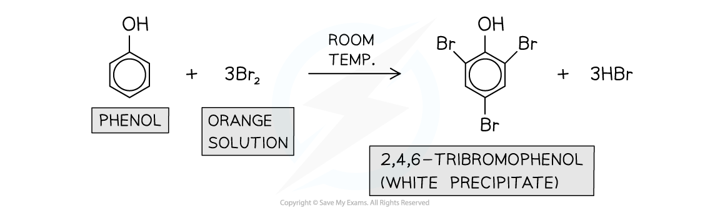
Common uses and safety
Arenes in context
| Compound / class | Common context |
|---|---|
| benzene | chemical feedstock for polymers、detergents、dyes and pharmaceuticals；use is restricted because it is toxic and carcinogenic |
| nitrobenzene | intermediate for aniline and other chemical manufacture |
| phenol | resins、plastics、disinfectant / pharmaceutical synthesis |
| substituted arenes | solvents、fragrance compounds、drug and polymer intermediates |
考试中 “common uses” 应与题目提到的 specific compound 对应，并同时注意 toxicity、flammability 和 required fume-hood handling。
Exam checklist
Source note
本页面对应：Note per Chapter/Note per Chapter/5.4 Organic Chemistry Arenes.pdf.pdf；考纲范围对应 International-A-Level-Chemistry-Spec 的 Topic 18: Organic Chemistry - Arenes（18.1–18.6）。页面中的示意图均从本章 note 独立提取并保存到 assets/notes/arenes/，便于单独放大和复用。